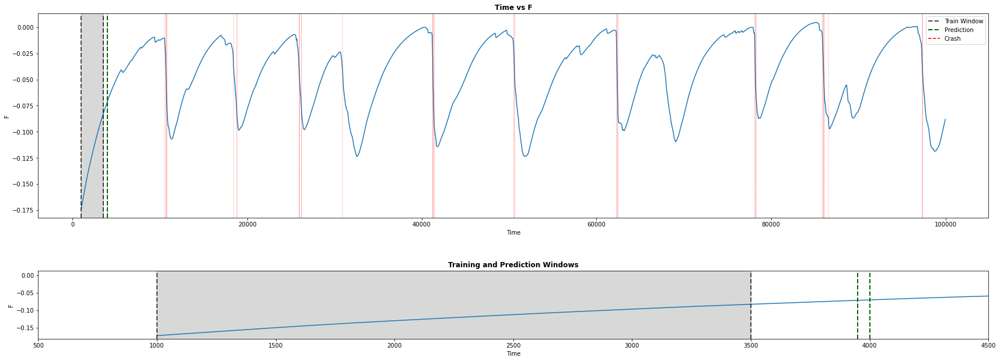

Projects
We were interested in detecting crashes (magnetic reconnection) occurring during plasma evolution, based on 65 given parameters. This can be viewed as a binary classification problem for a highly imbalanced time-series dataset. In order to get an idea of how Transformers perform in such tasks against traditional architectures, we conducted a comparative analysis of three models: 1-D Convolutional Neural Network, Deep Neural Network, Transformer. It was found that the Transformer performs the best and provides more reliable predictions in this scenario.
Challenges Faced
This would require more number of datapoints, or utilizing certain methods to overcome this high data imbalance.
Methods Used
- Large Class Imbalance
- Unstable Solutions
Our goal was to build a multinomial naive bayes model from scratch (using a few essential libraries) in R such that the model would be capable in text classification and able to correctly classify fake news in varying degrees (True, Mostly True, Partially True, etc). We implemented the model using a big-data, SQL approach so as to process big datasets quickly and efficiently. It was able to train and validate on a dataset with more than a million data points (with each data point containing a paragraph) in a mere 30 second time frame.
Challenges
- Multi-class classification (6 labels)
- Usual algorithm is inefficient for large data
- Large vocabulary size with irrelevant words
Methods Used
- Feature Selection with Mutual Information Score
- Utilizing dplyr library with functions like select filter, join, etc to make model for quick and efficient
- Analyzed effect of stemming vs lemmatization, keeping vs not keeping tokens with equal scores
- Large Class Imbalance
- Unstable Solutions
Using measurements from four drift tubes, we were supposed to come up with an algorithm that is good in detecting the presence of a muon pair, which is really rare and hard to detect directly.
Challenges
- Multi-class classification (6 labels)
Methods Used
- Feature Selection with Mutual Information Score
- Large Class Imbalance